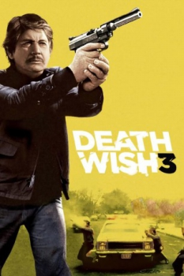
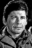

Country:United States, 92 minutes
Spoken languages:
Genres:Action, Crime, Drama
Director(s):Michael Winner
Writer(s):Don Jakoby
Video Codec:Unknown
Number: 2125


Certification:R
Storyline:
Architect/vigilante Paul Kersey arrives back in New York City and is forcibly recruited by a crooked police chief to fight street crime caused by a large gang terrorizing the neighborhoods.
Cast: 

Medium: Original DVD,
Comments: w/ Death Wish 2 & 4
Loaned: No
Aspect ratio: Unknown